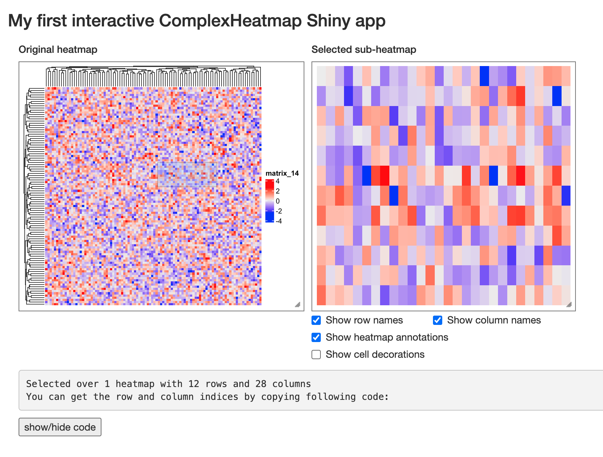
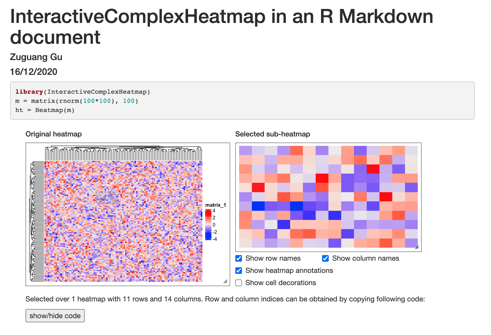
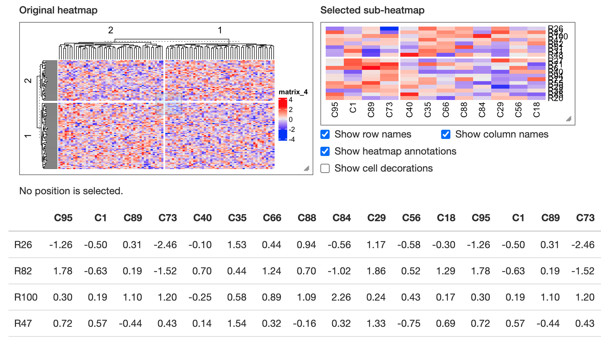
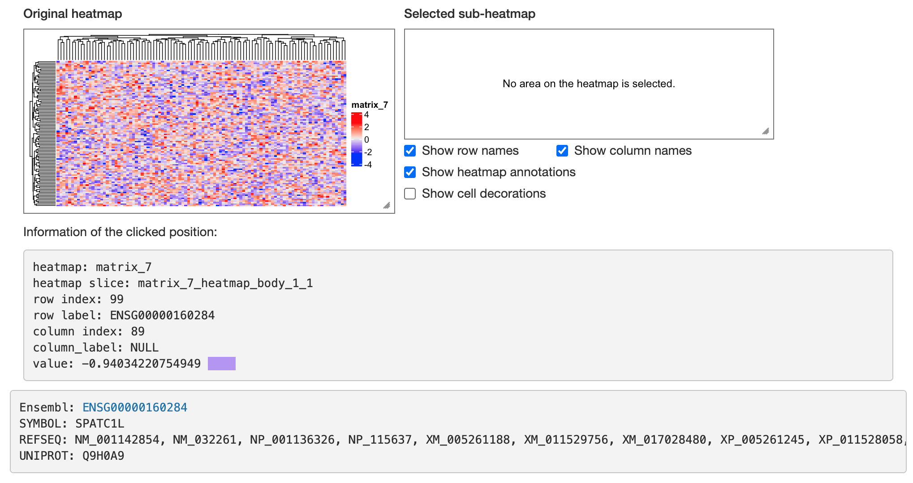

Functions for Shiny app development
Zuguang Gu ( z.gu@dkfz.de )
2020-12-17
Source:vignettes/shiny_dev.Rmd
shiny_dev.RmdUsage
ht_shiny() can export heatmaps as a stand-alone Shiny app. InteractiveComplexHeatmap also provides two functions for integrating the interactive heatmap widgets into other Shiny apps. The two functions are:
-
InteractiveComplexHeatmapOutput(): for building UI. -
MakeInteractiveComplexHeatmap(): for processing on the sever side.
The usage is simple. Following is an example that you can directly copy and paste to your R session.
library(InteractiveComplexHeatmap)
library(shiny)
m = matrix(rnorm(100*100), nrow = 100)
ht = Heatmap(m)
ht = draw(ht)
ui = fluidPage(
h3("My first interactive ComplexHeatmap Shiny app"),
InteractiveComplexHeatmapOutput()
)
server = function(input, output, session) {
MakeInteractiveComplexHeatmap(ht, input, output, session)
}
shinyApp(ui, server)
You can also put multiple interactive heatmaps widgets in a single Shiny app, but this time you must assign a “heatmap id” for each one, so that MakeInteractiveComplexHeatmap() can find the correct heatmap to response. The heatmap id should start with letters.
ht1 = Heatmap(m, col = c("white", "blue"))
ht1 = draw(ht1)
ht2 = Heatmap(m, col = c("white", "red"))
ht2 = draw(ht2)
ui = fluidPage(
h3("The first heatmap"),
InteractiveComplexHeatmapOutput("heatmap_1"),
hr(),
h3("The second heatmap"),
InteractiveComplexHeatmapOutput("heatmap_2")
)
server = function(input, output, session) {
MakeInteractiveComplexHeatmap(ht1, input, output, session, "heatmap_1")
MakeInteractiveComplexHeatmap(ht2, input, output, session, "heatmap_2")
}
shinyApp(ui, server)
Customize the widgets
The div block of the original heatmap and the sub-heatmap can be resized by dragging the two boxes, but still, InteractiveComplexHeatmapOutput() has arguments width1, width2, height1 and height2 that control the initialize sizes of the two boxes. You can check ht_shiny_example(16) where the size of the heatmap box is manually set to make sure the heatmap is well visible.
By default, to get the information of a single cell in the heatmap, a “click” action is used. In InteractiveComplexHeatmapOutput(), you can also set the action to "hover" or "dblclick" to change the action. Note no matter the action is a click or a hover, when applying the brush action, click or hover will always be first applied and you will see the output for a single cell appears and fastly disappears. Currently I don’t have a solution for that.
The style of the brush can be specified by brush_opt argument. The value should be a list and the value will be sent to shiny::brushOpts().
Work with R Markdown documents
It is very straightforward to integrate InteractiveComplexHeatmap in an interactive R Markdown document, in a normal way of integrating normal Shiny widgets. Following is an example and you can run a real interactive document with heatmaps by ht_shiny_example(22).
---
title: "InteractiveComplexHeatmap in an Rmarkdown document"
author: "Zuguang Gu"
date: "16/12/2020"
output: html_document
runtime: shiny
---
```{r, echo=FALSE}
library(InteractiveComplexHeatmap)
m = matrix(rnorm(100*100), 100)
ht = Heatmap(m)
```
```{r, echo=FALSE}
ui = fluidPage(
InteractiveComplexHeatmapOutput()
)
server = function(input, output, session) {
MakeInteractiveComplexHeatmap(ht, input, output, session)
}
shiny::shinyApp(ui, server)
```
Self-define the output
Both the click and brush action on the heatmap trigger an output below the heatmap. The output gives the information of which row(s) and columns(s) are selected by users. The reponse for the two actions can be self-defined.
In MakeInteractiveComplexHeatmap(), there are two arguments click_action and brush_action which accept self-defined functions and define how to response after the heatmap is clicked or brushed. The input for the two functions should accept two argumnts, one is a DataFrame object which contains the information of which row(s) and columns(s) are selected by users, and the second argument should always be output which is used in the Shiny app.
To use click_action or brush_action, a htmlOutput (or other similar *Output) should be first setup in the UI, then the Shiny app can know where to update the output.
The click_action or brush_action is basically defined as follows (assume the id set in htmlOutput() is "info":
function(df, output) {
output[["info"]] = renderUI({ # or output$info = ...
if(!is.null(df)) {
...
} else {
...
}
})
}If users didn’t click or brush in the heatmap body, df that is passed to the functions will be NULL. Users might need to perform a sanity check here and print specific output when the heatmap was not selected.
The format of df is slightly different between click and brush. If it is a click action, df has the same format as the returned object of selectPosition() function, which looks like follows. It always has one row.
## DataFrame with 1 row and 6 columns
## heatmap slice row_slice column_slice row_index
## <character> <character> <numeric> <numeric> <integer>
## 1 mat_a mat_a_heatmap_body_1_2 1 2 9
## column_index
## <integer>
## 1 1If it is a brush action, df has the same format as the returned object of selectArea() function, which looks like follows:
## DataFrame with 4 rows and 6 columns
## heatmap slice row_slice column_slice row_index
## <character> <character> <numeric> <numeric> <IntegerList>
## 1 mat_a mat_a_heatmap_body_1_2 1 2 7,5,2,...
## 2 mat_a mat_a_heatmap_body_2_2 2 2 6,3
## 3 mat_b mat_b_heatmap_body_1_1 1 1 7,5,2,...
## 4 mat_b mat_b_heatmap_body_2_1 2 1 6,3
## column_index
## <IntegerList>
## 1 2,4,1,...
## 2 2,4,1,...
## 3 1,2,3,...
## 4 1,2,3,...In the following example, in the UI, I add a new htmlOutput with id info. On the sever side, I define click_action to print a styled text and brush_action to print the table for the selected rows and columns from the heatmap. Note I also set default_click_action = FALSE, default_brush_action = FALSE in MakeInteractiveComplexHeatmap() to turn off the default responses.
You can also run the following example simply by ht_shiny_example(20).
library(GetoptLong) # for the qq() function
m = matrix(rnorm(100*100), 100)
rownames(m) = paste0("R", 1:100)
colnames(m) = paste0("C", 1:100)
ht = Heatmap(m, show_row_names = FALSE, show_column_names = FALSE, row_km = 2, column_km = 2)
ht = draw(ht)
ui = fluidPage(
InteractiveComplexHeatmapOutput(),
htmlOutput("info")
)
click_action = function(df, output) {
output[["info"]] = renderUI({
if(!is.null(df)) {
HTML(qq("<p style='background-color:#FF8080;color:white;padding:5px;'>You have clicked on heatmap @{df$heatmap}, row @{df$row_index}, column @{df$column_index}</p>"))
}
})
}
library(kableExtra)
brush_action = function(df, output) {
row_index = unlist(df$row_index)
column_index = unlist(df$column_index)
output[["info"]] = renderUI({
if(!is.null(df)) {
HTML(kable_styling(kbl(m[row_index, column_index, drop = FALSE], digits = 2, format = "html")))
}
})
}
server = function(input, output, session) {
MakeInteractiveComplexHeatmap(ht, input, output, session,
click_action = click_action, brush_action = brush_action,
default_click_action = FALSE, default_brush_action = FALSE)
}
shinyApp(ui, server)
ht_shiny_example(21) gives another scenario where the output needs to be self-defined. In that example, an gene expression matrix is visualized and clicking on the heatmap will print the corresponding gene and some other annotations related to this gene. Run ht_shiny_example(21) to see how this is implemented.
